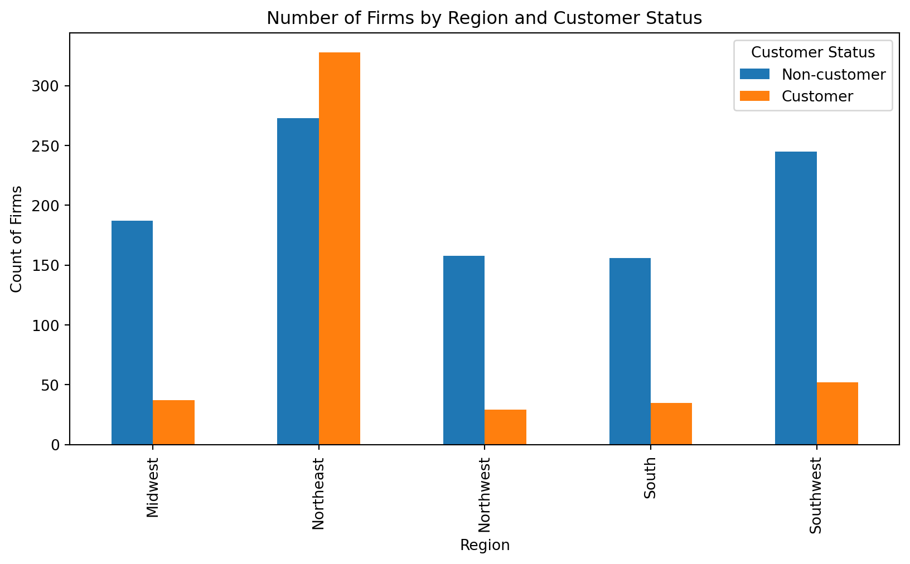
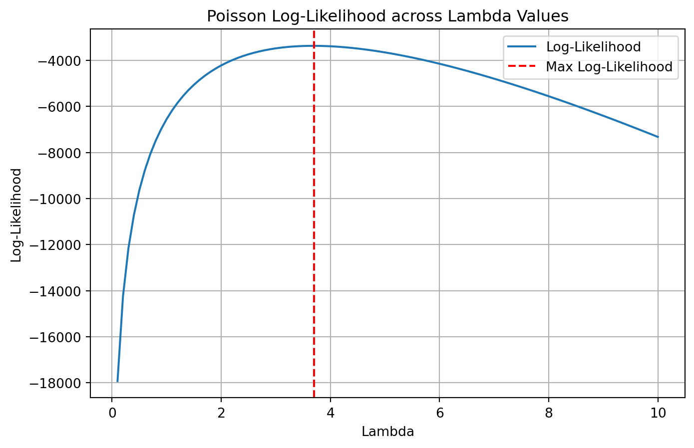

import pandas as pd
import matplotlib.pyplot as plt
import numpy as np
from sklearn.preprocessing import StandardScaler
from scipy.optimize import minimize
from scipy.special import gammaln
import statsmodels.api as sm
airbnb_df = pd.read_csv('airbnb.csv')
blueprinty_df = pd.read_csv('blueprinty.csv')Poisson Regression Examples
Blueprinty Case Study
Introduction
Blueprinty is a small firm that makes software for developing blueprints specifically for submitting patent applications to the US patent office. Their marketing team would like to make the claim that patent applicants using Blueprinty’s software are more successful in getting their patent applications approved. Ideal data to study such an effect might include the success rate of patent applications before using Blueprinty’s software and after using it. Unfortunately, such data is not available.
However, Blueprinty has collected data on 1,500 mature (non-startup) engineering firms. The data include each firm’s number of patents awarded over the last 5 years, regional location, age since incorporation, and whether or not the firm uses Blueprinty’s software. The marketing team would like to use this data to make the claim that firms using Blueprinty’s software are more successful in getting their patent applications approved.
Data
Firms using Blueprinty’s software (customers) typically have more patents on average (around 4.13 patents) compared to non-customers (about 3.47 patents). The histograms reveal that both groups have distributions skewed toward lower numbers of patents, but Blueprinty customers generally have a higher frequency of firms with a larger number of patents. This preliminary analysis suggests a positive association between using Blueprinty’s software and obtaining patents.
plt.figure(figsize=(10, 5))
blueprinty_df[blueprinty_df['iscustomer'] == 0]['patents'].hist(alpha=0.5, label='Non-customer', bins=20)
blueprinty_df[blueprinty_df['iscustomer'] == 1]['patents'].hist(alpha=0.5, label='Customer', bins=20)
plt.title("Histogram of Patents by Customer Status")
plt.xlabel("Number of Patents")
plt.ylabel("Frequency")
plt.legend()
plt.show()
mean_patents = blueprinty_df.groupby('iscustomer')['patents'].mean()
print(mean_patents)iscustomer
0 3.473013
1 4.133056
Name: patents, dtype: float64Blueprinty customers are not selected at random. It may be important to account for systematic differences in the age and regional location of customers vs non-customers.
Customers and non-customers differ in regional representation: customers are predominantly located in the Northeast, whereas non-customers are more evenly spread across various regions. Regarding age, there’s little practical difference between the two groups, although customers tend to be slightly older on average (approximately 26.9 years) compared to non-customers (approximately 26.1 years). This indicates regional factors may play a role in the decision to adopt Blueprinty’s software, while age differences are relatively minor.
region_counts = pd.crosstab(blueprinty_df['region'], blueprinty_df['iscustomer'])
region_counts.plot(kind='bar', figsize=(10,5))
plt.title("Number of Firms by Region and Customer Status")
plt.xlabel("Region")
plt.ylabel("Count of Firms")
plt.legend(title='Customer Status', labels=['Non-customer', 'Customer'])
plt.show()
blueprinty_df.boxplot(column='age', by='iscustomer', figsize=(8,5))
plt.title("Firm Age by Customer Status")
plt.xlabel("Customer Status (0 = Non-customer, 1 = Customer)")
plt.ylabel("Firm Age")
plt.suptitle('')
plt.show()
print(blueprinty_df.groupby('iscustomer')['age'].mean())
iscustomer
0 26.101570
1 26.900208
Name: age, dtype: float64Estimation of Simple Poisson Model
Since our outcome variable of interest can only be small integer values per a set unit of time, we can use a Poisson density to model the number of patents awarded to each engineering firm over the last 5 years. We start by estimating a simple Poisson model via Maximum Likelihood.
Given that \(Y \sim \text{Poisson}(\lambda)\), the probability density function is:
\(f(|\lambda) = \frac{e^{-\lambda}\lambda^{Y}}{Y!}\)
Thus, the likelihood function for the observed data \((Y_1, Y_2, \dots, Y_n)\) is: \(L(\lambda|Y) = \prod_{i=1}^{n}\frac{e^{-\lambda}\lambda^{Y_i}}{Y_i!}\)
And the corresponding log-likelihood function is: \(\ell(\lambda|Y) = \sum_{i=1}^{n}\left[Y_i\log(\lambda) - \lambda - \log(Y_i!)\right]\)
def poisson_loglikelihood(lam, Y):
"""
Calculate the Poisson log-likelihood for given lambda and observed Y.
Parameters:
lam (float): Poisson parameter lambda (> 0)
Y (array-like): Observed counts
Returns:
float: Log-likelihood value
"""
if lam <= 0:
return -np.inf
log_factorials = np.array([np.sum(np.log(np.arange(1, y+1))) if y > 0 else 0 for y in Y])
log_likelihood = np.sum(Y * np.log(lam) - lam - log_factorials)
return log_likelihoodY = blueprinty_df['patents'].values
lambda_values = np.linspace(0.1, 10, 100)
loglike_values = [poisson_loglikelihood(lam, Y) for lam in lambda_values]
plt.figure(figsize=(8, 5))
plt.plot(lambda_values, loglike_values, label='Log-Likelihood')
plt.xlabel('Lambda')
plt.ylabel('Log-Likelihood')
plt.title('Poisson Log-Likelihood across Lambda Values')
plt.axvline(lambda_values[np.argmax(loglike_values)], color='r', linestyle='--', label='Max Log-Likelihood')
plt.legend()
plt.grid(True)
plt.show()
Derivation of MLE for \((\lambda)\)
Starting from the log-likelihood function:
\(\ell(\lambda|Y) = \sum_{i=1}^{n}\left[Y_i\log(\lambda) - \lambda - \log(Y_i!)\right]\)
Take the first derivative with respect to \((\lambda\)\):
\(\frac{d\ell(\lambda|Y)}{d\lambda} = \sum_{i=1}^{n}\left(\frac{Y_i}{\lambda} - 1\right)\)
Set this derivative equal to zero to find the maximum likelihood estimate (MLE):
\(\sum_{i=1}^{n}\left(\frac{Y_i}{\lambda} - 1\right) = 0\)
Solve for \((\lambda\)\):
\(\frac{\sum_{i=1}^{n} Y_i}{\lambda} - n = 0 \quad \Longrightarrow \quad \lambda = \frac{\sum_{i=1}^{n} Y_i}{n} = \bar{Y}\)
Thus, the maximum likelihood estimate for \((\lambda)\) is simply the sample mean, \((\bar{Y})\), which intuitively makes sense since the mean of a Poisson distribution is \((\lambda)\).
Y = blueprinty_df['patents'].values
def neg_poisson_loglikelihood(lam, Y):
if lam <= 0:
return np.inf
return -np.sum(Y * np.log(lam) - lam)
initial_guess = np.mean(Y)
result = minimize(neg_poisson_loglikelihood,
x0=[initial_guess],
args=(Y,),
bounds=[(1e-5, None)])
lambda_mle = result.x[0]
print("MLE for lambda:", lambda_mle)MLE for lambda: 3.6846666666676033Estimation of Poisson Regression Model
Next, we extend our simple Poisson model to a Poisson Regression Model such that \(Y_i = \text{Poisson}(\lambda_i)\) where \(\lambda_i = \exp(X_i'\beta)\). The interpretation is that the success rate of patent awards is not constant across all firms (\(\lambda\)) but rather is a function of firm characteristics \(X_i\). Specifically, we will use the covariates age, age squared, region, and whether the firm is a customer of Blueprinty.
def poisson_regression_loglikelihood(beta, Y, X):
beta = np.asarray(beta, dtype=np.float64)
X_beta = X @ beta
X_beta = np.clip(X_beta, -20, 20) # prevent overflow in exp()
lambda_i = np.exp(X_beta)
log_factorials = gammaln(Y + 1) # stable log-factorial
loglik = np.sum(Y * X_beta - lambda_i - log_factorials)
return -loglikblueprinty_df['age_squared'] = blueprinty_df['age'] ** 2
scaler = StandardScaler()
blueprinty_df[['age', 'age_squared']] = scaler.fit_transform(blueprinty_df[['age', 'age_squared']])
X = pd.get_dummies(blueprinty_df[['age', 'age_squared', 'region', 'iscustomer']], drop_first=True)
X.insert(0, 'intercept', 1)
X_matrix = X.to_numpy(dtype=np.float64)
Y_vector = blueprinty_df['patents'].to_numpy(dtype=np.int32)
def poisson_regression_loglikelihood(beta, Y, X):
beta = np.asarray(beta)
X_beta = X @ beta
X_beta = np.clip(X_beta, -20, 20)
lambda_i = np.exp(X_beta)
log_factorials = gammaln(Y + 1)
loglik = np.sum(Y * X_beta - lambda_i - log_factorials)
return -loglik
beta_start = np.zeros(X_matrix.shape[1])
regression_result = minimize(
poisson_regression_loglikelihood,
beta_start,
args=(Y_vector, X_matrix),
method='BFGS'
)
beta_hat = regression_result.x
hessian_inv = regression_result.hess_inv
standard_errors = np.sqrt(np.diag(hessian_inv))
coef_table = pd.DataFrame({
'Coefficient': beta_hat,
'Std. Error': standard_errors
}, index=X.columns)
print(coef_table) Coefficient Std. Error
intercept 1.188966 0.038775
age 1.076022 0.115656
age_squared -1.181549 0.189616
iscustomer 0.207591 0.031799
region_Northeast 0.029170 0.064828
region_Northwest -0.017574 0.070656
region_South 0.056561 0.058948
region_Southwest 0.050576 0.067469X_clean = X.drop(columns='intercept', errors='ignore').astype(float)
X_glm = sm.add_constant(X_clean)
Y_numeric = Y_vector.astype(int)
glm_model = sm.GLM(Y_numeric, X_glm, family=sm.families.Poisson())
glm_results = glm_model.fit()
customer_col = [col for col in glm_results.model.exog_names if 'iscustomer' in col][0]
X1_glm = X_glm.copy()
X0_glm = X_glm.copy()
X1_glm[customer_col] = 1
X0_glm[customer_col] = 0
X1_glm = X1_glm[glm_results.model.exog_names]
X0_glm = X0_glm[glm_results.model.exog_names]
y_pred_1 = glm_results.predict(X1_glm)
y_pred_0 = glm_results.predict(X0_glm)
average_treatment_effect = np.mean(y_pred_1 - y_pred_0)
from tabulate import tabulate
coef_df = glm_results.summary2().tables[1].reset_index()
coef_df.columns = ['Variable', 'Coefficient', 'Std. Error', 'z', 'P>|z|', 'CI Lower', 'CI Upper']
summary_table = tabulate(coef_df, headers="keys", tablefmt="github", showindex=False)
log_likelihood = glm_results.llf
pseudo_r2 = 1 - glm_results.deviance / glm_results.null_deviance
n_obs = glm_results.nobs
final_summary = f"""
### Poisson Regression Results (`statsmodels.GLM`)
{summary_table}
- **Log-Likelihood**: {log_likelihood:.1f}
- **Pseudo R² (Cox & Snell)**: {pseudo_r2:.3f}
- **Number of Observations**: {int(n_obs)}
- **Model Family**: Poisson (log link)
---
### Estimated Effect of Blueprinty's Software
- **Average Treatment Effect (Predicted)**: **{average_treatment_effect:.4f} patents**
"""
print(final_summary)
### Poisson Regression Results (`statsmodels.GLM`)
| Variable | Coefficient | Std. Error | z | P>|z| | CI Lower | CI Upper |
|------------------|---------------|--------------|------------|--------------|------------|------------|
| const | 1.18897 | 0.0367361 | 32.3651 | 8.51588e-230 | 1.11696 | 1.26097 |
| age | 1.07602 | 0.10041 | 10.7162 | 8.5396e-27 | 0.879221 | 1.27282 |
| age_squared | -1.18155 | 0.102625 | -11.5132 | 1.1315e-30 | -1.38269 | -0.980407 |
| iscustomer | 0.207591 | 0.0308953 | 6.71918 | 1.82751e-11 | 0.147037 | 0.268144 |
| region_Northeast | 0.0291701 | 0.0436255 | 0.668647 | 0.50372 | -0.0563343 | 0.114674 |
| region_Northwest | -0.0175745 | 0.0537806 | -0.326782 | 0.743833 | -0.122983 | 0.0878335 |
| region_South | 0.0565613 | 0.0526624 | 1.07404 | 0.282807 | -0.0466551 | 0.159778 |
| region_Southwest | 0.0505761 | 0.0471982 | 1.07157 | 0.283914 | -0.0419307 | 0.143083 |
- **Log-Likelihood**: -3258.1
- **Pseudo R² (Cox & Snell)**: 0.093
- **Number of Observations**: 1500
- **Model Family**: Poisson (log link)
---
### Estimated Effect of Blueprinty's Software
- **Average Treatment Effect (Predicted)**: **0.7928 patents**
todo: Interpret the results. The Poisson regression results (as shown in the summary table from the statsmodels.GLM() output) indicate that being a Blueprinty customer is significantly associated with an increase in the number of patents awarded. Specifically, the coefficient for the iscustomer variable is 0.208 with a standard error of 0.031 and a highly significant z-score of 6.72 (p < 0.001). This implies that, holding all else constant, being a Blueprinty customer increases the expected number of patents by approximately 23% (since exp(0.208)≈1.231. This estimated effect is further validated by the counterfactual prediction using the fitted model. When we simulate predicted patent counts for all firms assuming they are customers versus are not customers, the average treatment effect is 0.793 patents.
That is, on average, firms would receive nearly one additional patent over 5 years if they adopted Blueprinty’s software. Age also plays a substantial role. The age variable has a coefficient of 1.076, and age_squared has a coefficient of -1.182, both highly significant. These results (from the manually coded likelihood model and confirmed in glm_results) suggest a nonlinear relationship: as firms age, their patenting tends to increase, but the negative coefficient on age squared shows diminishing returns — very old firms see smaller increases or even a decrease in patents. Regarding regional controls, none of the regional dummy variables (e.g., region_Northeast, region_South) are statistically significant, with p-values well above 0.1. This suggests that regional location does not significantly influence patent success once age and customer status are accounted for. The model’s overall fit is reasonable for count data, with a log-likelihood of -3258.1 and a pseudo R² of 0.093, indicating that while most of the variation in patent counts remains unexplained (common in Poisson models), the model still captures meaningful effects, especially related to customer status and firm age.
To understand the real-world effect of Blueprinty’s software on patent success, we created a counterfactual simulation using our fitted Poisson regression model. Since the beta coefficient for the iscustomer variable (0.208) is not directly interpretable in terms of raw patent counts, we built two hypothetical scenarios to make the impact easier to understand. In the first scenario (X_0), we assumed that none of the firms were Blueprinty customers. In the second scenario (X_1), we assumed that all firms were customers. Everything else about the firms (age, region, etc.) stayed exactly the same in both scenarios. We then used the model to predict the expected number of patents for each firm under both cases. By subtracting the predicted patent counts for the non-customer scenario from the customer scenario, and then averaging the difference across all firms, we found that being a Blueprinty customer is predicted to result in about 0.793 more patents over a 5-year period. This is a meaningful difference, especially when the average firm in the dataset is awarded around 3.68 patents (as shown earlier in the summary statistics). In short, this simulation confirms that Blueprinty’s software is associated with a moderate but practically significant increase in patenting success. It’s not just a statistically significant relationship, it’s one that likely has real impact for the firms using the software.
AirBnB Case Study
Introduction
AirBnB is a popular platform for booking short-term rentals. In March 2017, students Annika Awad, Evan Lebo, and Anna Linden scraped of 40,000 Airbnb listings from New York City. The data include the following variables:
import pandas as pd
import numpy as np
import statsmodels.api as sm
import statsmodels.formula.api as smf
import matplotlib.pyplot as plt
import seaborn as snsairbnb_missing = airbnb_df.isna().sum()
relevant_cols = [
'number_of_reviews', 'days', 'room_type', 'bathrooms', 'bedrooms',
'price', 'review_scores_cleanliness', 'review_scores_location',
'review_scores_value', 'instant_bookable'
]
airbnb_clean = airbnb_df[relevant_cols].dropna()
airbnb_clean = pd.get_dummies(airbnb_clean, columns=['room_type', 'instant_bookable'], drop_first=True)
Y_airbnb = airbnb_clean['number_of_reviews']
X_airbnb = airbnb_clean.drop(columns='number_of_reviews')
X_airbnb = X_airbnb.astype(float)
Y_airbnb = Y_airbnb.astype(int)
X_airbnb = sm.add_constant(X_airbnb)
airbnb_model = sm.GLM(Y_airbnb, X_airbnb, family=sm.families.Poisson())
airbnb_results = airbnb_model.fit()
airbnb_summary = airbnb_results.summary2().tables[1]
airbnb_summary
#Plots
plt.style.use('ggplot')
# Plot distribution of number_of_reviews
plt.figure(figsize=(8, 5))
sns.histplot(airbnb_clean['number_of_reviews'], bins=50, kde=False)
plt.title('Distribution of Number of Reviews')
plt.xlabel('Number of Reviews')
plt.ylabel('Frequency')
plt.tight_layout()
plt.show()
airbnb_clean['room_type_Private room'] = airbnb_clean['room_type_Private room'].astype(int)
# Boxplot of reviews by room type
plt.figure(figsize=(8, 5))
sns.boxplot(x='room_type_Private room', y='number_of_reviews', data=airbnb_clean)
plt.xticks([0, 1], ['Entire Home/Shared', 'Private Room'])
plt.title('Number of Reviews by Room Type')
plt.xlabel('Room Type')
plt.ylabel('Number of Reviews')
plt.tight_layout()
plt.show()
# Scatterplot of reviews vs. price
plt.figure(figsize=(8, 5))
sns.scatterplot(x='price', y='number_of_reviews', data=airbnb_clean, alpha=0.3)
plt.title('Number of Reviews vs. Price')
plt.xlabel('Price ($)')
plt.ylabel('Number of Reviews')
plt.tight_layout()
plt.show()
# Correlation heatmap for numeric predictors
plt.figure(figsize=(10, 8))
sns.heatmap(airbnb_clean.corr(), annot=True, fmt=".2f", cmap='coolwarm')
plt.title('Correlation Heatmap of Variables')
plt.tight_layout()
plt.show()To understand what drives the number of reviews (used as a proxy for bookings), we ran a Poisson regression on several listing features in the Airbnb dataset. The results provide clear insights into what influences guest engagement and booking behavior. The strongest and most intuitive finding is that the longer a listing has been active (days), the more reviews it has. The coefficient is small (0.000051), but it’s applied to values that can be in the thousands, meaning its real world impact is substantial. This simply reflects that more time online gives a listing more chances to be booked and reviewed.
The “instant bookable” feature stands out as particularly important. Listings that can be booked instantly, without host approval, have a coefficient of 0.346, which means they are predicted to get about 41% more reviews than those that require approval exp(0.346)≈1.41). This is a large and meaningful effect, suggesting that hosts should enable this feature if they want to increase visibility and bookings. Cleanliness ratings also matter a lot. Each one-point increase in the cleanliness score is associated with a 12% increase in the number of reviews (coef = 0.113). This makes sense: guests reward clean listings with more bookings and reviews. However, two other review scores, location and value, surprisingly have negative coefficients (-0.077 and -0.091, respectively).
This could mean that while those scores matter to guests’ satisfaction, they don’t directly drive higher booking rates, or it could reflect some counterintuitive relationship (like higher rated locations needing fewer reviews to stay popular).
Looking at room types, shared rooms receive significantly fewer reviews than entire homes (coef = -0.246), which aligns with common user preferences, people usually prefer privacy. Private rooms also see slightly fewer reviews compared to entire homes, but the effect is much smaller (-0.011). The model also finds a slight negative effect of price (-0.000018), indicating that higher-priced listings tend to receive marginally fewer reviews, likely because they are less frequently booked. Similarly, more bathrooms are associated with fewer reviews (-0.118), which might seem strange, but could reflect that listings with multiple bathrooms tend to be larger or more expensive properties booked less often.